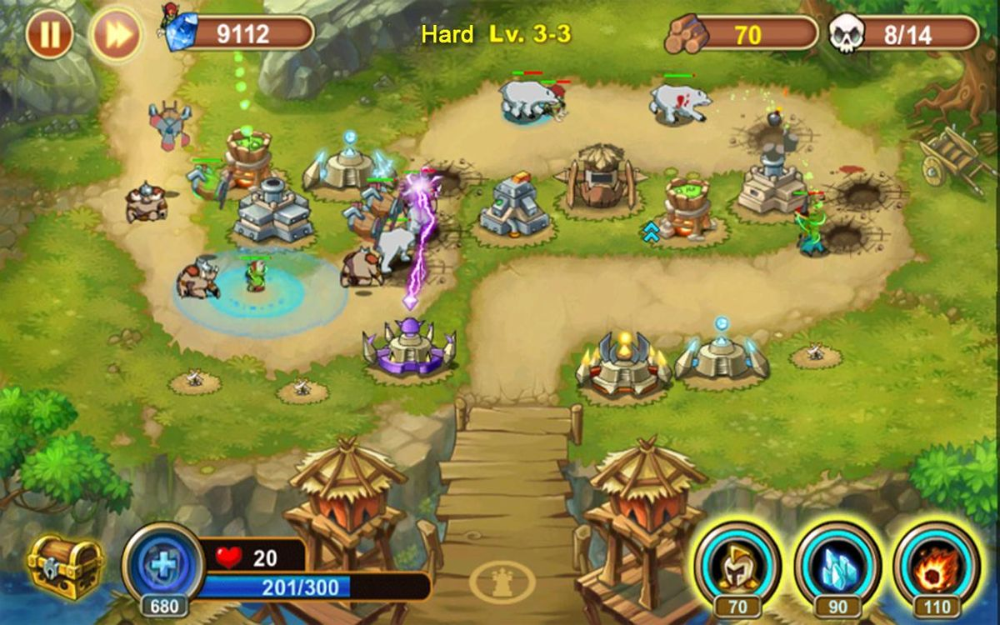

Le but de ce projet est de recréer un jeu du type "Tower Defence". Pour cela, nous sommes libres de choisir le thème ainsi que les fonctionnalités du jeu. Ce projet est à faire en groupe de deux et je suis donc accompagné de Corentin Mey. Le temps impartit pour réaliser ce projet est d'une durée d'un mois. Nous avons eu l'idée de prendre pour thème Clash of Clans et c'est donc sur quoi l'on s'est lancés.

NOS IDÉES
NIVEAUX
Nous avons pensés le jeu pour qu'il y ai dix niveaux. Le niveau atteind est enregistrer lorsque l'on quitte le jeu et nous avons donc le choix, lorsqu'on relance le jeu, de reprendre là où l'on s'est arrêtés ou alors de recommence au niveau un. Le principe de niveaux est le suivant : chaque niveau est associé à un Hôtel De Ville, on peut donc arriver jusqu'à l'HDV dix. À chaque HDV est associé des niveaux de défences et d'ennemis conforment avec le jeu existant. En plus de cela, chaque niveau dispose d'un décor différent que l'on pourra précédement voir sous forme de minimap sur le menu principal.
MAP
Pour ce qui est question de la map... C'est spécial ! Comme on désire prendre pour thème Clash of Clans, il va falloir que l'on créer une map en rapport avec le background de CoC et donc faire une map isomètrique. On a donc prévu que séparer cette map en plusieurs carrés (isomètriques eux aussi) qui vont nous permettre par la suite de pouvoir placer aux endroits autorisés les batiments de défence, mais aussi de tracer le chemin que vont prendre les ennemis ainsi que calculer les distances.
SHOP
Contrairement aux Tower Defence classiques, nous n'allons pas utiliser des endroits pré-installés pour placer nos défences. Nous allons plutôt utiliser le principe du shop de Clash of Clans. Nous allons donc créer un petit onglet que l'on pourra ouvrir et, à partir de là, faire glisser un batiment à l'endroit qu'on veux sur la map. Biensûr l'emplacement sur lequel on glisse le batiment doit être vide et dans la map. De plus, l'ajout d'une défence ne pourra être possible que si le joueur passède l'argent requis.
BÂTIMENTS
Une fois un batiment placé, plusieurs actions au cours de la parite pourront nous permettre de continuer de gérer nos défences. Tout d'abord on aura la possibilité de détruire nos propres batiments en échange d'une petite quantité d'or. Déplacer les bâtiments est imossible c'est pourquoi il faudra bien réfléchir avant d'en placer. La deuxième fonctionnalité sera d'améliorer le niveau du bâtiment. Cette amélioration, contre une certaine quantité d'or, va permettre d'augmenter les dégats de la défence. D'ailleur la même fonctionnalité éxiste pour les HDV et ça sera ça qui nous permettra de passer d'un niveau à un autre. (HDV1 -> HDV2 = NIVEAU1 -> NIVEAU2)
PAUSE
À tous moments lors de la partie, un menu pause est à la disposition du joueur. Ce menu mettra donc en pause la partie ce qui peut nottement permettre au joueur de réfléchir à une action ou à une stratégie. À partir de ce menu, il sera possible de reprendre la partie, de la recommencer ou encore de la quitter. Attention, quitter la partie n'enregistrera pas la progrssion au sein d'un niveau.
AVANCEMENT
Jour 1
Ce premier jour avons seulement prépraré et listé tous ce qu'on allais devoir faire durant le projet. On a notemment faire un magnifique Trello contenant tous les statistiques des ennemis, des tours de défence. Nous avons aussi récupéré les maps que l'on comptait mettre dans notre jeu ainsi que la plupart des sprites. Dernière, chose, nous nous sommes répartis les tâches et avons même commencé à écrire les fonctions et le structures que nous allons utiliser.
Jour 2
Nous avons chacuns travaillé sur une de nos partie pour ce premier jour de code. Corentin a fait la partie permettant de détécter si un ennemi entrait dans la zone d'une tour. Quand à moi j'ai codder le shop. Qui peux donc s'ouvrir et d'où l'on pouvais glisser des bâtiments à un endroit sur la map.
Jour 3
Ce jour là, j'ai surtout travaillé sur le menu principal ainsi que la gestion des niveaux. J'ai donc fait des bouttons propres pour quitter, continuer une partie en cours ou alors recommencer une partie. J'ai aussi implémenté un système permettant de mettre un miniature de la map à l'entrée qui correspond au niveau auquel le joueur se trouve. La map en jeu ainsi que l'hôtel de ville est alors mis au bon niveau. Mon équipier à quand à lui commencé le système de case pour la map.
Jour 4
Coco est arrivé ce matin en ayant complètement finit la map ! Le sytème de case marchait et on pouvais même snap les bâtiment que l'on achetait du shop sur une case de la map. Nous avons donc mis en commun nos codes et règlé quelques problèmes. Ce jour là, personnelement, j'ai seulement améliorer quelques bricoles avec le shop.